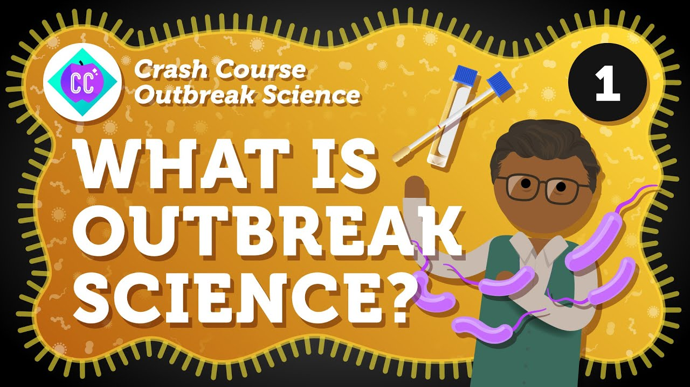
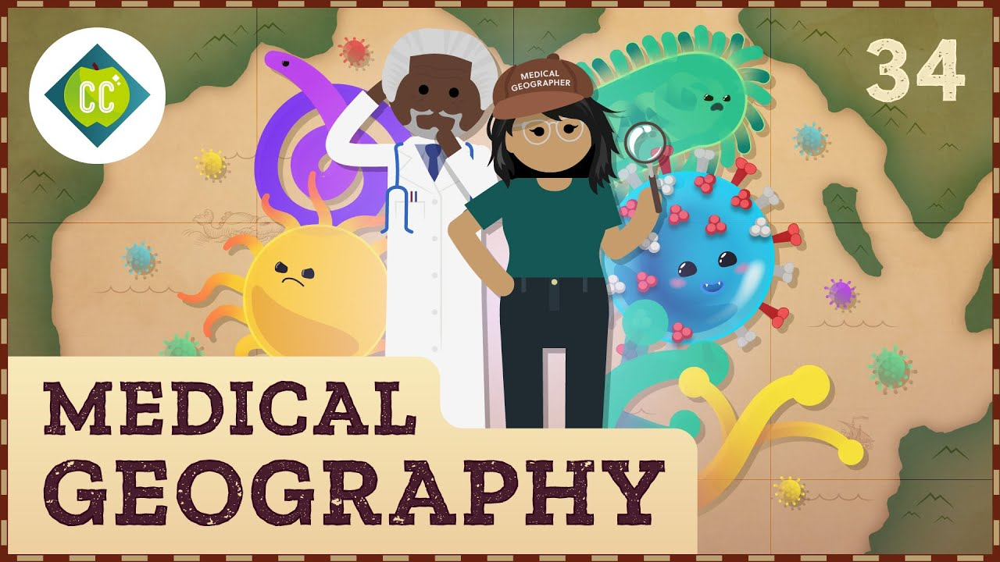
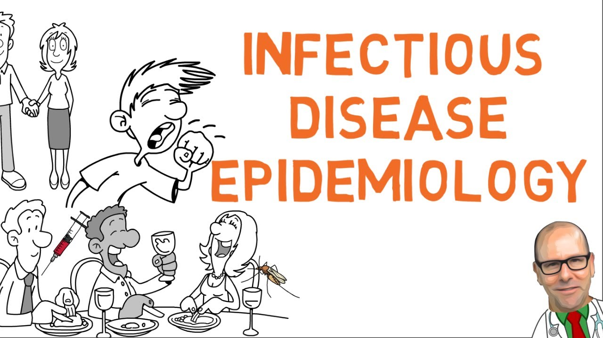
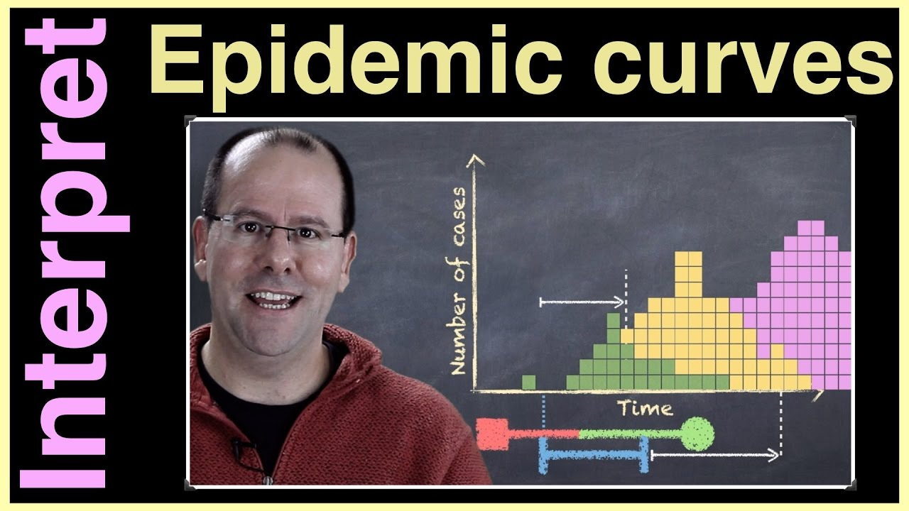
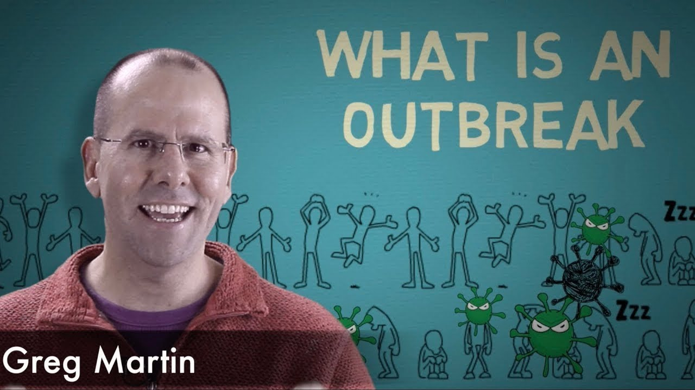
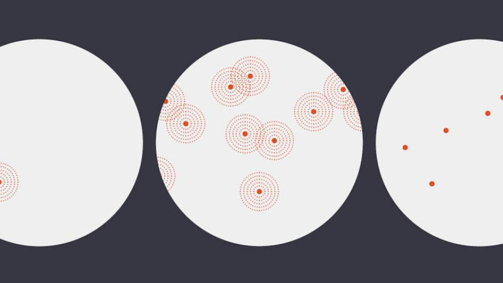

Epidemiology
On this page, you'll find several resources including videos, podcasts, news articles, and academic papers related to epidemiology. Each resource includes a brief summary and recommended education level to help you decide which to click on.
Videos
Crash Course: Outbreak Science
The Outbreak Science series produced by Crash Course provides an in-depth look at the science behind outbreaks and how public health professionals respond to them. Across 15 episodes, the series covers key topics such as epidemiology, disease transmission, outbreak investigation, and control measures. Designed to be accessible and informative, it aims to educate viewers about the complexities of managing infectious disease outbreaks and the importance of public health interventions.
Recommended Education Level: High School +
Watch VideoCrash Course: How Does Disease Move?
In this episode of Crash Course Geography, the host discusses the movement of diseases and how they spread across different regions and populations. The episode explores the factors that influence disease transmission, including human behavior, environmental conditions, and global connectivity. It also discusses the role of geography in understanding and managing outbreaks, highlighting how maps and other geographic tools can help track and control the spread of infectious diseases.
Recommended Education Level: Middle School +
Watch VideoCrash Course Public Health: Intro to Epidemiology
In this episode of Crash Course Public Health, viewers are introduced to the field of epidemiology, the science that studies how diseases spread and can be controlled within populations. The host explains key concepts such as incidence, prevalence, and the basic reproduction number (R0). The episode also covers the various types of epidemiological studies, including cohort, case-control, and cross-sectional studies, and discusses the importance of epidemiology in public health decision-making and interventions.
Recommended Education Level: 8th Grade +
Watch VideoHow do mathematicians model infectious disease outbreaks?
In this insightful video, the process of modeling infectious disease outbreaks is explored. The video explains how mathematicians use various mathematical models, such as the SIR (Susceptible, Infected, Recovered) model, to understand and predict the spread of diseases. It discusses the importance of parameters like transmission rates and recovery rates, and how these models can help inform public health strategies and interventions. The video aims to provide a deeper understanding of the critical role mathematics plays in epidemiology and outbreak management.
Recommended Education Level: Undergraduate +
Watch VideoInfectious disease epidemiology and transmission dynamics (how infections spread)
This informative video explains the basics of infectious disease epidemiology and how infections spread. It covers key ideas like the basic reproduction number (R0), ways infections are transmitted, and factors that affect the spread of diseases. With clear explanations and engaging visuals, viewers learn about the mechanisms behind disease outbreaks and the importance of public health strategies in controlling infections.
Recommended Education Level: High School +
Watch VideoKnow how to interpret an epidemic curve?
This educational video explains how to interpret an epidemic curve, a crucial tool in epidemiology for understanding the progression of disease outbreaks. It covers the different phases of an epidemic, how to read and analyze the curve, the insights the curve provides about transmission dynamics, peak infection periods, and the effectiveness of public health interventions. Clear explanations and visual aids make this complex topic accessible to a wide audience.
Recommended Education Level: 8th Grade +
Watch VideoOutbreaks - Investigation and Control
This insightful video delves into the processes involved in investigating and controlling disease outbreaks. It covers the steps epidemiologists take to identify the source of an outbreak, track its spread, and implement measures to contain it. Topics include case identification, data collection, analysis of transmission patterns, and the application of public health interventions. Through clear explanations and practical examples, viewers learn the critical methods used to manage and mitigate outbreaks.
Recommended Education Level: 8th Grade +
Watch VideoDisease Origins & Transmission
This PBS video explores the origins and transmission of diseases, shedding light on how infectious agents emerge and spread through populations. The program delves into the factors that contribute to disease outbreaks, including environmental changes, human behavior, and global travel. Expert interviews and scientific insights provide a comprehensive understanding of how diseases originate and the mechanisms behind their transmission, highlighting the importance of surveillance and public health measures in preventing and controlling outbreaks.
Recommended Education Level: Middle School +
Watch VideoArticles
The SIR Model for Spread of Disease - The Differential Equation Model

This article introduces the SIR (Susceptible, Infected, Recovered) model, a fundamental framework used to describe the spread of infectious diseases through populations. The authors explain how differential equations are used to model the dynamics of disease transmission, capturing the rates at which individuals move between the susceptible, infected, and recovered states. The article provides a mathematical foundation for understanding epidemic behavior and offers insights into predicting and controlling outbreaks.
Recommended Education Level: Undergraduate +
Read ArticleBritannica: Epidemiology

This comprehensive article explores the field of epidemiology, the branch of medicine that deals with the incidence, distribution, and control of diseases. It covers the history of epidemiology, fundamental concepts, and methodologies used to study disease patterns in populations. The article also discusses the role of epidemiologists in public health, the challenges they face, and the impact of their work on disease prevention and control.
Recommended Education Level: 8th Grade +
Read ArticleNational Geographic: Epidemiology
This article describes the field of epidemiology and what epidemiologists do to study disease. It also includes a list of relevant vocabulary with definitions.
Recommended Education Level: 5th Grade +
Read ArticleEpidemiology: The Public Health Science

This insightful article explores epidemiology as a crucial public health science. It dives into how epidemiologists study the occurrence and spread of diseases, aiming to protect communities and improve health outcomes. The article highlights historical milestones, key figures in the field, and the methods used to investigate and manage disease outbreaks. It also discusses the ongoing challenges and evolving nature of epidemiological research in managing public health crises.
Recommended Education Level: Middle School +
Read ArticleEpidemiology Vs. Public Health: What's The Difference?
In this informative article, the author explains the differences and connections between epidemiology and public health. The article provides a clear overview of how epidemiology focuses on the study of disease patterns, causes, and effects in populations, while public health encompasses a broader range of activities aimed at improving community health and preventing disease. It highlights the complementary roles of epidemiologists and public health professionals in managing health crises and promoting well-being.
Recommended Education Level: Middle School +
Read ArticleMethods of Disease Transmission
This educational infographic shows how diseases spread. It explains different ways infections are passed on, like through direct contact, the air, and by insects. The graphic gives clear examples and explanations, helping readers understand how diseases move from one person to another and how to prevent them.
Recommended Education Level: 5th Grade +
Read InfographicEpidemic, Endemic, Pandemic: What are the Differences?
This article explains the key differences between epidemics, endemics, and pandemics. It provides clear definitions and examples of each term, illustrating how diseases can vary in scope and impact. It also discusses the factors that influence the classification of disease outbreaks and the public health responses required to manage them.
Recommended Education Level: Middle School +
Read ArticleAcademic Papers
Influenza Seasonality: Underlying Causes and Modeling Theories
This article examines the factors that contribute to the seasonality of influenza and reviews various theoretical models used to understand and predict its patterns. The authors explore biological, environmental, and social influences on influenza transmission and discuss how different modeling approaches can help clarify the complex dynamics of seasonal flu outbreaks.
Recommended Education Level: Undergraduate +
Read PaperComplexity, simplicity, and epidemiology
This article examines the balance between complexity and simplicity in the field of epidemiology. The authors discuss how complex models can provide detailed insights into disease patterns and causation, while simpler models offer clarity and ease of interpretation. They advocate for a thoughtful approach that leverages both complex and simple models to enhance understanding and address public health challenges effectively.
Recommended Education Level: High School +
Read PaperOther SEPA (Science Education Partnership Award) Projects
The Great Diseases - Infectious Diseases

"Infectious Diseases" is a unit within "The Great Diseases" curriculum module offered by Tufts University, and is aimed at teaching middle and high school students about the complexities of infectious diseases. This module covers the biology of pathogens, the mechanisms of disease transmission, the body’s defense mechanisms, and public health strategies to control infectious diseases.
Recommended Education Level: Middle School +
Visit SiteIt's Contagious! Promoting the Biomedical Workforce Pipeline through Infectious Diseases

“It's Contagious! Promoting the Biomedical Workforce Pipeline through Infectious Diseases” is an educational resource that aims to engage students in learning about infectious diseases and to inspire interest in biomedical careers. The curriculum includes interactive lessons and activities designed to enhance understanding of the science behind infectious diseases and the importance of the biomedical workforce.
Recommended Education Level: Middle School +
Visit SiteEpidemiology and the Energy Balance Equation

This educational resource offers a comprehensive curriculum focused on teaching students the principles of epidemiology, specifically in relation to energy balance, nutrition, and physical activity. It aims to deepen students' understanding of how epidemiological methods are applied to investigate the connections between lifestyle factors and health outcomes.
Recommended Education Level: Middle School +
Visit Site